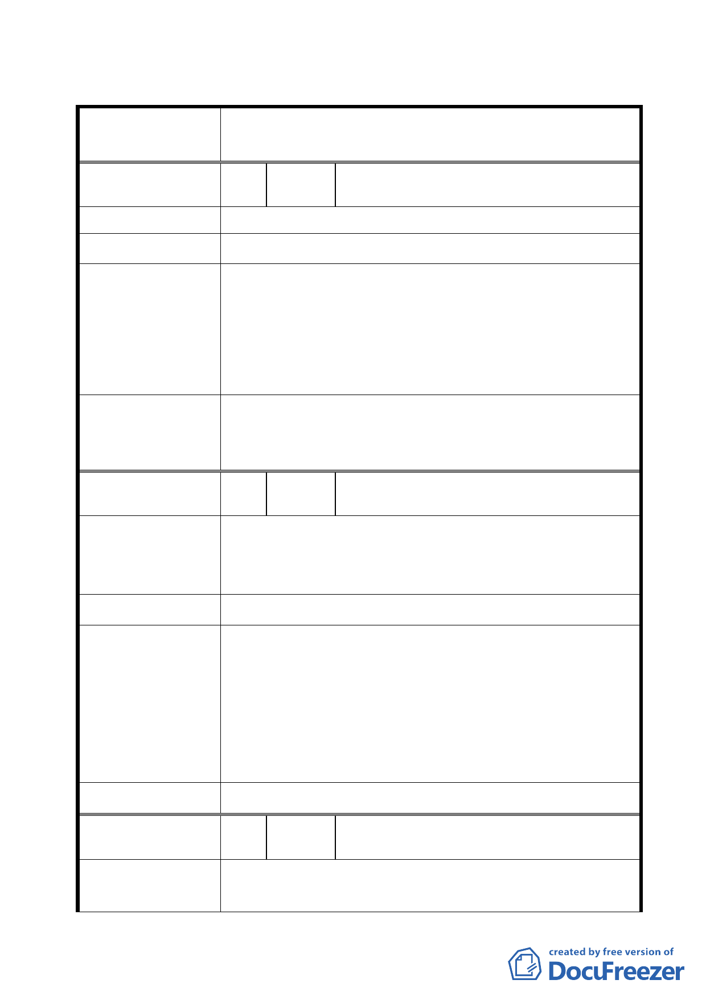

臺北市都市計畫委員會公民或團體所提意見綜理表
修訂臺北市內湖區蘆洲里附近工業區細部計畫案內市地
案名
重劃B 區山坡地管制範圍案
編 號 1 陳情人 黃志豪
陳 情 理 由 無移置計畫。
建 議 辦 法 我要參加市都委會。
有關本地區之開發方式係於 100 年 8 月 29 日公告都市計
畫案內劃定重劃範圍，並載明以市地重劃方式整體開發，
市 府 回 覆 意 見 至有關市地重劃作業之相關拆遷補償或安置作業，係屬後
續重劃工程進行過程之處理作業，非屬本次修訂山坡地管
制範圍案內容。
委員會決議
有關陳情本案涉及市地重劃拆遷相關事宜，請市府依法妥
善處理，並就社會弱勢住戶予以照顧。另民眾陳情表示不
願意參與市地重劃乙項，請市府持續溝通協調。
編 號 2 陳情人 陳樁霖
本人世居於此處，長輩也在此。不希望山坡地移除後，沒
陳 情 理 由 有居住所。法令規定山坡地不得開發，市府不應另設法違
反規定。
建 議 辦 法 保留 172 巷內山坡地。
依本府 100 年 8 月 29 日公告都市計畫案內規定，全區由
工業區變更為科技工業區，且不得作住宅使用；案內亦載
明以市地重劃方式整體開發，至有關市地重劃作業之相關
市府回覆意見
拆遷補償或安置作業，係屬後續重劃工程進行過程之處理
作業，非屬本次修訂山坡地管制範圍案內容，故本件陳情
意見建議不予採納。
委 員 會 決 議 同編號 1
編 號 3 陳情人 王大協、楊雅萍
住戶不贊成重劃：
陳情理由
1. 因重劃以後住戶沒有地方居住。
-6-